前陣子參加了兩天保哥的.NET Core開發實戰課程，雖說曾經自己稍微靠Google玩過一陣子.NET Core，但畢竟那都是零碎的知識，能有位老師仔細講解架構還是比較能完整的學習。
這兩天的課程真的讓我學到很多，尤其在最後保哥的經驗分享與討論軟體架構的部分讓我非常有收穫。軟體架構類的知識一直都是很難單純靠網路上Google就能學到的東西，我之前也因此被面試官電過……除非工作環境在這塊已經相當成熟有很多範例可以研究外，在網路上除了多看開源專案以外似乎沒有什麼管道能夠有系統的學習，所以保哥在課堂上的討論對我來說真的是非常有幫助。
上完課之後短時間內大概還沒有機會實際運用.NET Core，所以決定把上課實作的過程筆記下來，未來真的有機會要用的時候才有回憶依據。
以下內容為純筆記性質，不會有太多解說。
dotnet CLI 建立與發佈專案 & 方案
dotnet new -l
- 列出可使用的範本
- e.g. mvc、webapp、console等
dotnet new console 建立主控台專案
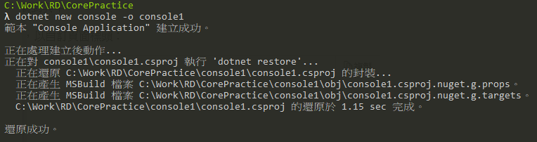
dotnet new classlib 建立類別庫專案
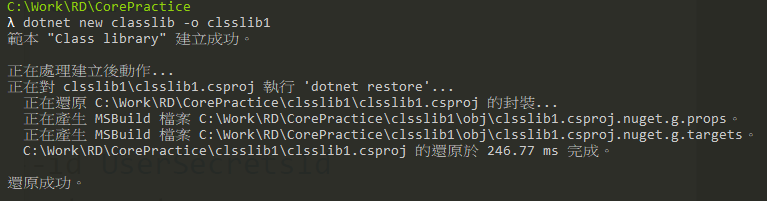dotnet new mstest -n classlib1.test
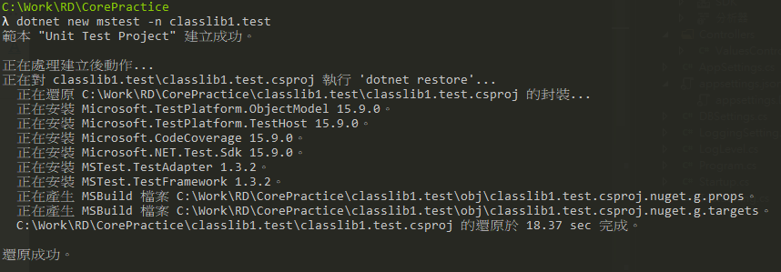dotnet new sln 建立方案 & 新增專案進方案 （但這個檔案基本上只有VS用）
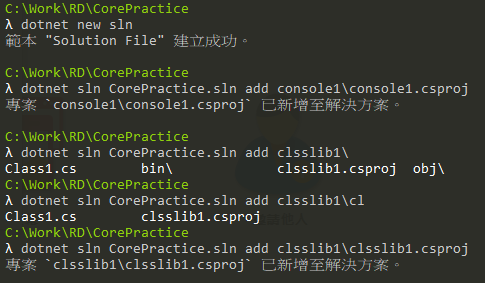dotnet build 建置專案
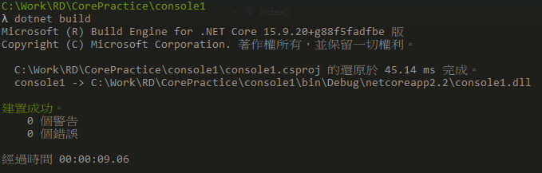dotnet clean 清除專案
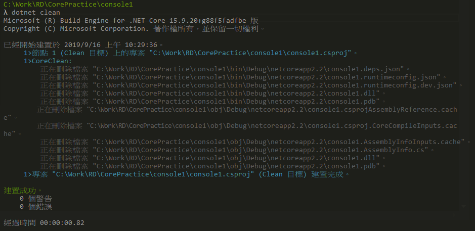dotnet run 建置並執行
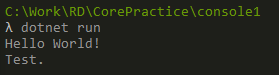dotnet publish 發佈
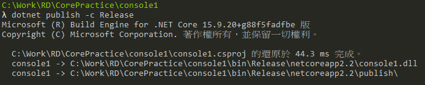以上指令後面接方案檔即可針對整個方案執行
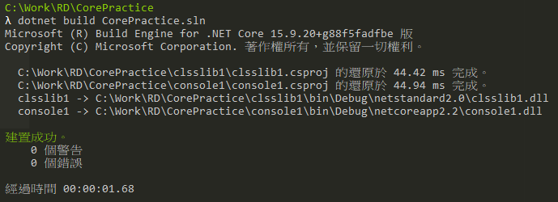
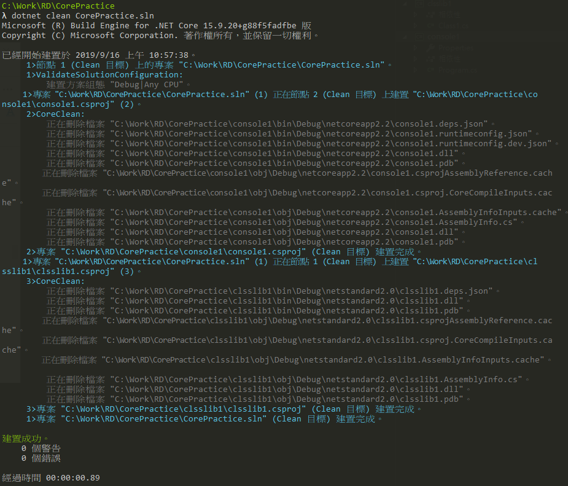
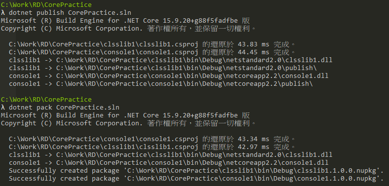可以直接用dotnet指令執行dll檔
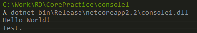dotnet msbuild /p:Configuration=Release 使用MSBuild建置
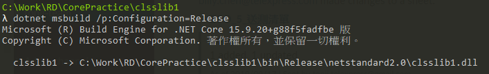dotnet test -t 列出可用的測試
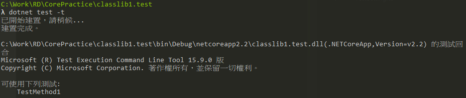dotnet test 執行測試
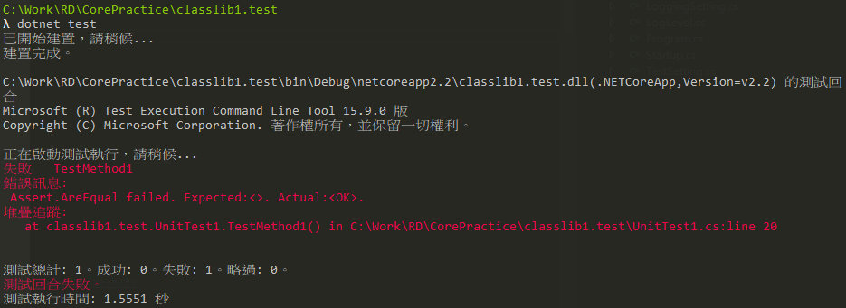dotnet vstest 執行dll測試
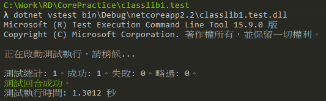dotnet add/remove/list reference {專案} 新增{專案}進參考/移除{專案}參考/列出所有參考
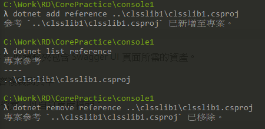dotnet add/remove/list package {Nuget套件} 安裝{Nuget套件}/移除 {Nuget套件}/列出所有Nuget套件
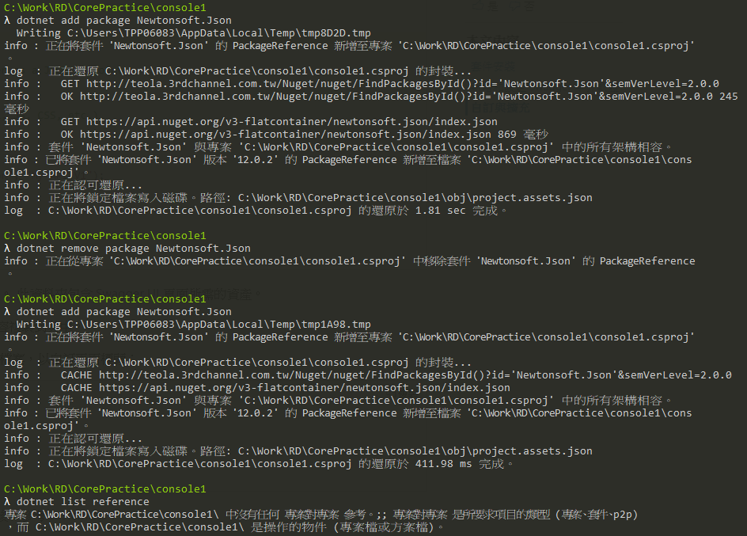部署參考官方文件： https://docs.microsoft.com/zh-tw/dotnet/core/deploying/deploy-with-cli
部署類型預設為FDD
- Framework 相依部署（FDD）
- 目標系統需安裝.NET Core Runtime
- Framework 相依可執行檔（FDE）
- .NET Core 2.2開始支援
- 目標系統需安裝.NET Core Runtiime
- 會直接部署目標平台的可執行檔，不須透過dotnet執行
- 自封式部署（SCD）
- 目標系統不須事先安裝任何共用元件
- 部署檔案相當大，包含.NET Core程式庫和Runtime的所有元件皆會部署，並無法與其他.NET Core應用程式共用
- Framework 相依部署（FDD）
dotnet publish -c Release -r win10-x64 –self-contained true 設定使用SCD部屬
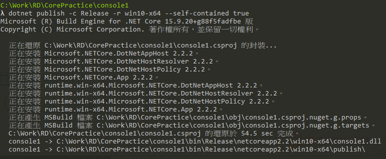
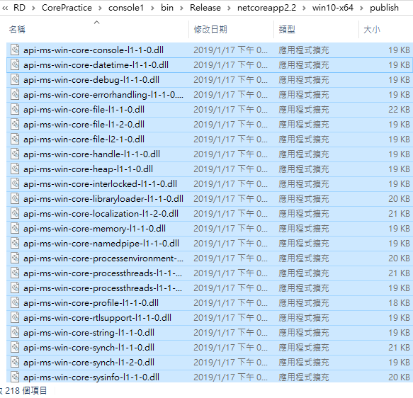dotnet publish -c Release -r win10-x64 –self-contained false 不使用SCD部署
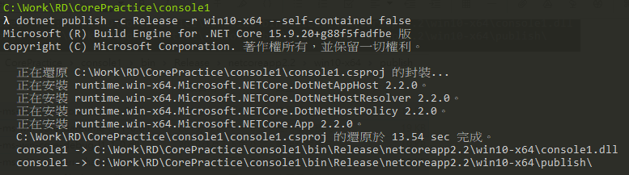
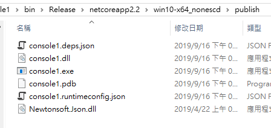win10-x64為RID，可用dotnet –info查詢本機RID或查表
dotnet publish -c Release /p:PublishDir=C:\Work\RD\IIS 設定publish目標資料夾
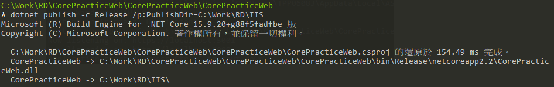
Comments